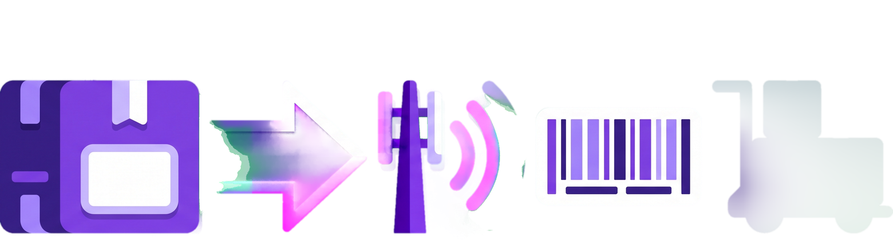
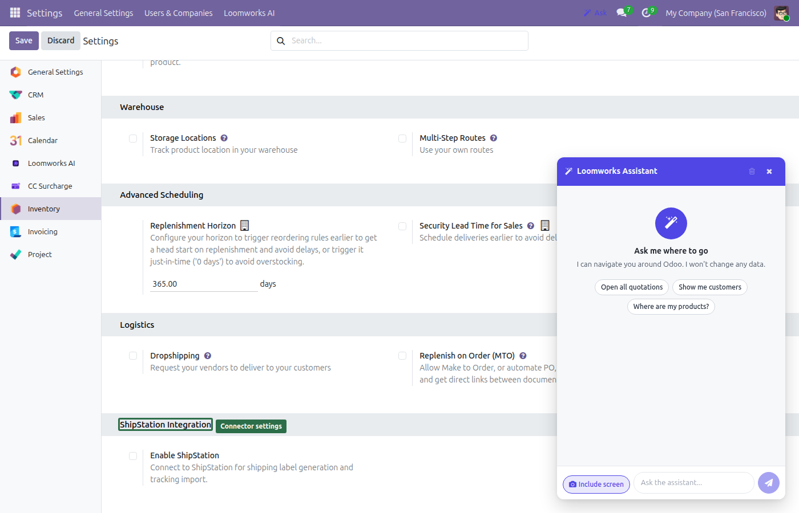
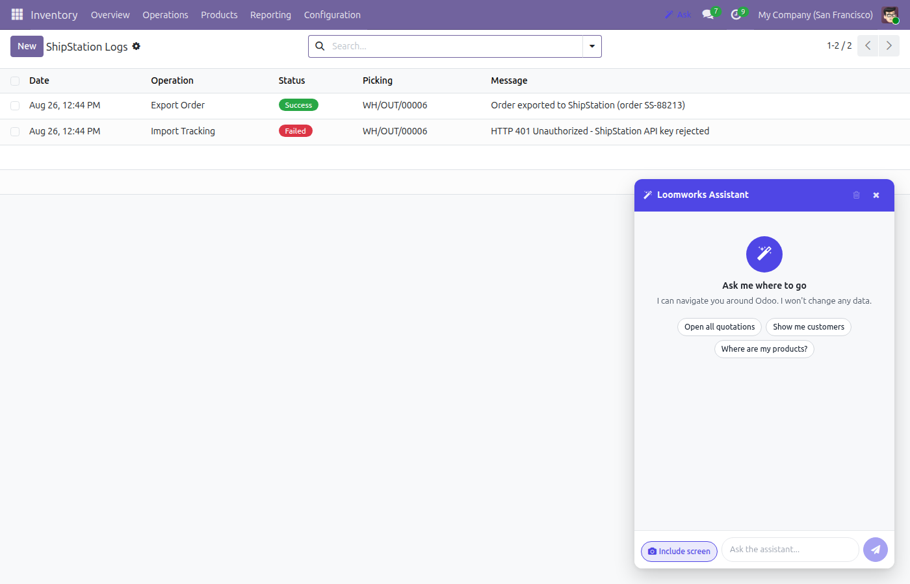
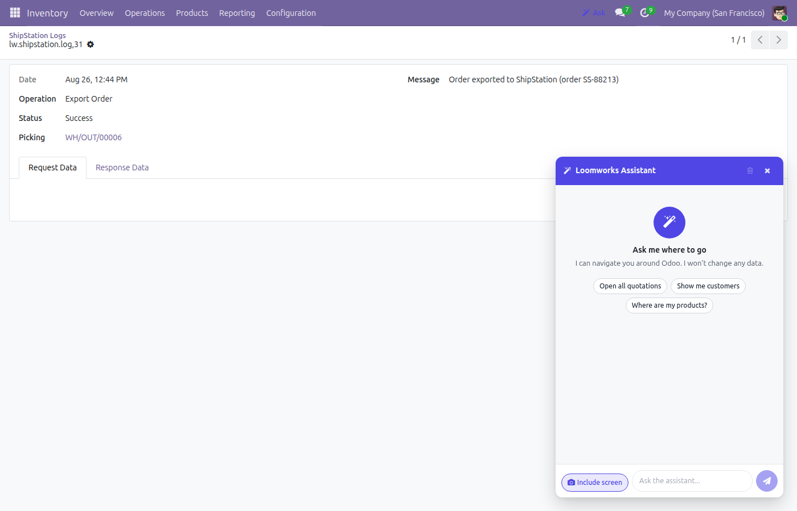
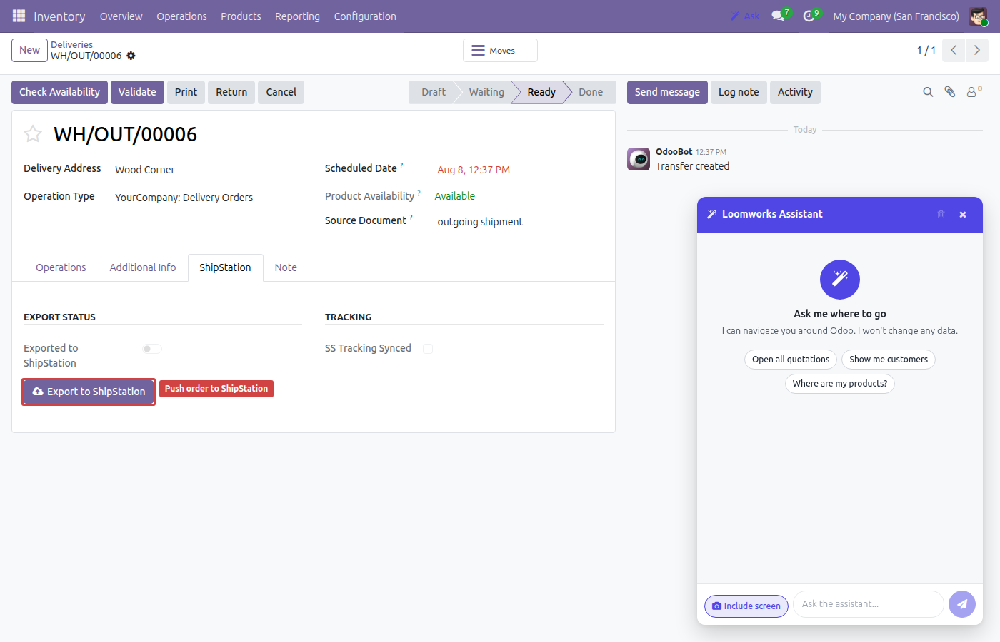
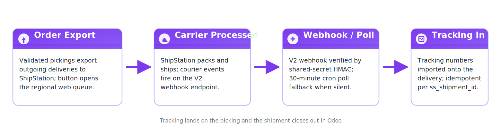

Native ShipStation V2 webhooks, outbound order export, and automatic tracking import for Odoo deliveries — with a poll fallback that never misses a shipment.
Receives ShipStation fulfillment_shipped_v2 events at /shipstation/webhook/v2, verified in constant time against a shared secret — replay-window and body-size guards included.
Tracking numbers land on the matching stock.picking with a chatter message, carrier label, and shipment reference. Duplicate shipments are acknowledged without double-posting.
A watermark-based GET /v2/shipments poll reconciles any delivery whose webhook was missed — the safety net under the fast path.
Push outgoing deliveries to ShipStation with ship-to, bill-to, and line items. Optional auto-export as soon as a picking is confirmed.
Every export, import, and error is recorded in a dedicated ShipStation Log view under Inventory → Configuration for full traceability.
“Open in ShipStation” jumps straight to the Awaiting Shipment queue on your account’s regional pod URL — configurable per company.




ir.config_parameter keys (lw_shipstation.webhook_secret, lw_shipstation.api_key) — generate the secret with openssl rand -hex 32.fulfillment_shipped_v2 webhook in ShipStation pointing at your Odoo URL /shipstation/webhook/v2, forwarding the shared secret in a custom header.